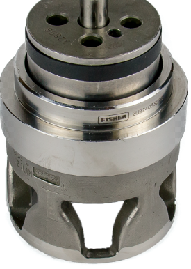

ch2 pass: tmpl-diagram (cage's three jobs)
Cage-Guided Valve

1 2 3- Bore — guides the plug on a large bearing surface
- Windows — their shape sets the flow characteristic
- Bottom rim — clamps the seat ring under the bonnet load

1 2 3